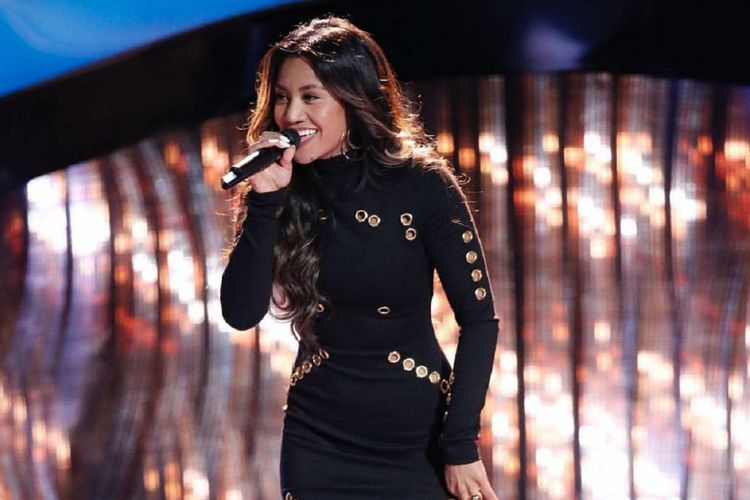

Vokalis Indonesia Maharasyi Lolos Blind Audition The Voice Amerika
ANDI MUTTYA KETENG PANGERANG
KabarKabur.com -27/09/2017, 16:32 WIB

Maharasyi Hansa, berhasil lolos dalam sesi blind audition The Voice musim ke-13.(Instagram Maharasyi Hansa)
KabarKabur.com - Seorang penyanyi wanita berdarah Indonesia, Maharasyi Hansa, berhasil lolos dalam sesi blind audition The Voice musim ke-13.
Maharasyi tampil di hadapan empat juri The Voice, yakni Adam Levine, Blake Shelton, Jennifer Hudson, dan Miley Cyrus pada hari kedua audisi.
Menyanyikan "Tell Me Something Good" yang dipopulerkan oleh Rufus dan Chaka Khan, Maharasyi berhasil mencuri perhatian Hudson dan Miley.
Saat Maharasyi sampai pada bagian refrain, Hudson tiba-tiba menekan tombol merah di hadapannya dan berbalik.
Di ruangan lain, keluarga Maharasyi tampak bersorak sambil mengangkat tangan. Pemandangan ini terlihat dalam video berdurasi tiga menit 50 detik di saluran YouTube resmi The Voice.
Beberapa detik kemudian, giliran Cyrus membalikkan kursinya yang yang menandai bahwa ia ingin Maharasyi berada dalam timnya.
"Oh my God. My name is Maharasyi," seru Maharasyi di akhir penampilannya saat melihat dua juri membalikkan kursi mereka.
Hudson menyebut bahwa Maharasyi memilih lagu yang tepat dan memuji perempuan berambut panjang itu memiliki warna vokal seperti Chaka Khan. Namun, Hudson merasa Maharasyi kurang berani mengambil nada tinggi pada akhir lagu sehingga menantangnya.
"Fancy me, please. Try the last note in full voice," kata Hudson yang membuat Maharasyi gugup, seperti yang dikutip oleh Kompas.com, Rabu (27/9/2017).
Cyrus kemudian mencoba merayu Maharasyi dengan mengatakan bahwa ia akan membuatnya percaya diri dan tak akan mengubah gaya bernyanyinya. Lalu tiba saatnya Maharasyi memilih antara Cyrus dan Hudson.
"I'm gonna pick coach Jennifer," ujar Maharasyi pada akhirnya yang disambut seruan "yess!" berulang kali dari Hudson.
penulis :Andi Muttya Keteng Pangerang
Editor :Bestari Kumala Dewi